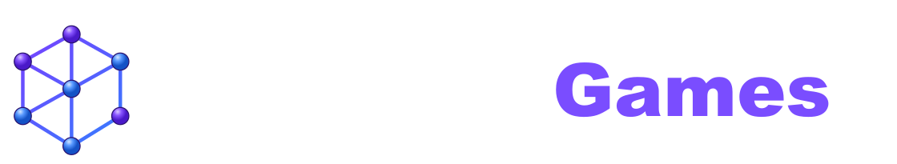

VĀRDU TĪKLS
LATVIEŠU VALODAS SPĒLE
EKSPERIMENTS 01LATVIEŠU VALODA
SALIEC VĀRDU.
ATKLĀJ SISTĒMU.
Kombinē valodas klucīšus. Katrs atrastais vārds var atvērt jaunas iespējas.
01 / DARBA LAUKS● AKTĪVS
—
PIEEJAMIE KLUCĪŠI
Izvēlies klucīšus un atrodi pirmo vārdu.
03 / VĀRDU SAVIENOJUMU TĪKLS0 SAVIENOJUMI
Tīkls nav sagatavots iepriekš. Katrs Tēzaurā apstiprinātais vārds kļūst par jaunu mezglu un pieslēdzas radniecīgākajam atklājumam.
JAUNS VĀRDS—
Izvēlies klucīšus.
JAUNS ATKLĀJUMS